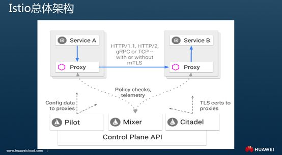
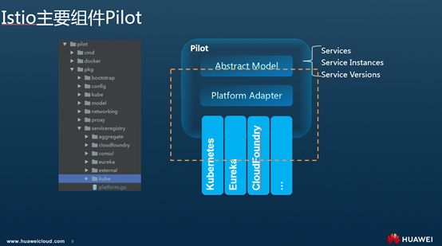
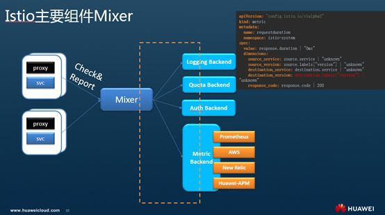
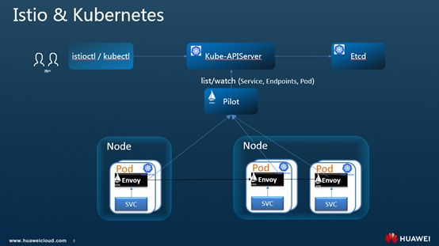

Istio调用链埋点原理剖析—是否真的“零修改”分享实录（上）
前言

大家好，我是zhangchaomeng，来自华为Cloud BU，当前在做华为云应用服务网格。今天跟大家分享的主题是Istio调用链相关内容。通过剖析Istio的架构机制与Istio中调用链的工作原理来解答一个大家经常问道的一个问题：Istio是否像其官方文档中宣传的一样，对业务代码完全的无侵入，无需用做任何修改就可以完成所有的治理能力，包括调用链的埋点？
关于这个问题，可以提前透漏下，答案是让人有点沮丧的，得改点。在Isito中你不用在自己的代码里使用各种埋点的SDK来做埋点的逻辑，但是必须要有适当的配合的修改。
为什么本来无侵入的Service Mesh形态的技术却要求我们开发者修改些代码，到底要做哪些修改？Istio中调用链到底是怎么工作的？在下面的内容中将逐个回答这些问题。
本次分享的主题包括两部分: 第一部分作为背景和基础，介绍Istio的架构和机制；第二部分将重点介绍Istio调用链的相关内容，解答前面提出的几个问题。
Isito的架构和机制
Service Mesh

如官方介绍，Istio是一个用于连接、控制、保护和观测服务的一个开放平台。即：智能控制服务间的流量和API调用；提供授权、认证和通信加密机制自动保护服务安全；并使用各种策略来控制调用者对服务的访问；另外可以扩展丰富的调用链、监控、日志等手段来对服务的与性能进行观测。
Istio是Google继Kubernetes之后的又一重要项目，提供了Service Mesh方式服务治理的完整的解决方案。2017年5月发布第一个版本 0.1， 2018年6月1日发布了0.8版本，第一个LTS版本，当前在使用的1.0版本是今年7.31发布，对外宣传可用于生产。最新的1.1版本将2018.11中旬最近发布(当时规划实际已延迟，作者注)。

Istio属于Service Mesh的一种实现。通过一张典型图来了解下Service Mesh。如图示深色是Proxy，浅色的是服务，所有流入流出服务的都通过Proxy。Service Mesh正是由这一组轻量代理组成，和应用程序部署在一起，但是应用程序感知不到他的存在。特别对于云原生应用，服务间的应用访问拓扑都比较复杂，可以通过Service Mesh来保证服务间的调用请求在可靠、安全的传递。在实现上一般会有一个统一的控制面，对这些代理有个统一的管理，所有的代理都接入一个控制面。对代理进行生命期管理和统一的治理规则的配置。
这里是对Service Mesh特点的一个一般性描述，后面结合Isito的架构和机制可以看下在Istio中对应的实现。
可以看到Service Mesh最核心的特点是在Proxy中实现治理逻辑，从而做到应用程序无感知。其实这个形态也是经过一个演变的过程的：

最早的治理逻辑直接由业务代码开发人员设计和实现，对服务间的访问进行管理，在代码里其实也不分治理和业务，治理本身就是业务的一部分。这种形态的缺点非常明显就是业务代码和治理的耦合，同时公共的治理逻辑有大量的重复。

很容易想到封装一个公共库，就是所谓的SDK，使用特定的SDK开发业务，则所有治理能力就内置了。Spring Cloud和Netflix都是此类的工具，使用比较广泛，除了治理能力外，SDK本身是个开发框架，基于一个语言统一、风格统一的开发框架开发新的项目非常好用。但这种形态语言相关，当前Java版本的SDK比较多。另外对于开发人员有一定的学习成本，必须熟悉这个SDK才能基于他开发。最重要的是推动已经在用的成熟的系统使用SDK重写下也不是个容易的事情。比如我们客户中就有用C开发的系统，运行稳定，基本不可能重写。对这类服务的治理就需要一个服务外面的治理方式。

于是考虑是否可以继续封装，将治理能力提到进程外面来，作为独立进程。即Sidecar方式，也就是广泛关注的Service Mesh 的。真正可以做到对业务代码和进程0侵入，这对于原来的系统完全不用改造，直接使用Sidecar进行治理。
用一段伪代码来表示以上形态的演变：

可以看到随着封装越来越加强，从公共库级别，到进程级别。对业务的侵入越来越少，SDK的公共库从业务代码中解耦，Sidecar方式直接从业务进程解耦了。对应的治理位置越来越低，即生效的位置更加基础了。尤其是Service Mesh方式下面访问通过 Proxy执行治理，所以Service Mesh的方式也已被称为一种应用的基础设施层，和TCP/IP的协议栈一样。TCP/IP负责将字节流可靠地在网络节点间传递；而应用基础设施则保证服务间的请求在安全、可靠、可被管控的传递。这也对应了前面Istio作为Service Mesh一种实现的定位。
Istio 关键能力

Istio官方介绍自己的关键能力如上所示，我把它分为两部分：一部分是功能，另有一部分提供的扩展能力。
功能上包括流量管理、策略执行、安全和可观察性。也正好应对了首页的连接、保护、控制和观测四大功能。
- 流量管理：是Istio中最常用的功能。可以通过配置规则和访问路由，来控制服务间的流量和API调用。从而实现负载均衡、熔断、故障注入、重试、重定向等服务治理功能，并且可以通过配置流量规则来对将流量切分到不同版本上从而实现灰度发布的流程。
- 策略执行：指Istio支持支持访问控制、速率限制、配额管理的能力。这些能力都是通过可动态插入的策略控制后端实现。
- 安全：Istio提供的底层的安全通道、管理服务通信的认证、授权，使得开发任务只用关注业务代码中的安全相关即可。
- 可观察性：较之其他系统和平台，Istio比较明显的一个特点是服务运行的监控数据都可以动态获取和输出，提供了强大的调用链、监控和调用日志收集输出的能力。配合可视化工具，运维人员可以方便的看到系统的运行状况，并发现问题进而解决问题。我们这次分享的主题调用链也正是Isito可观察性的一个核心能力。
后面分析可以看到以上四个特性从管理面看，正好对应Istio的三个重要组件。
扩展性：主要是指Istio从系统设计上对运行平台、交互的相关系统都尽可能的解耦，可扩展。这里列出的特性：
平台支持：指Istio可以部署在各种环境上，支持Kubernetes、Consul等上部署的服务，在之前版本上还支持注册到Eureka上的Service，新版本对Eureka的支持被干掉了；
集成和定制：指的Istio可以动态的对接各种如访问控制、配额管理等策略执行的后端和日志监控等客观性的后端。支持用户根据需要按照模板开发自己的后端方便的集成进来。
其实这两个扩展性的能力正好也对应了Istio的两个核心组件Pilot和Mixer，后面Isito架构时一起看下。
Istio 总体架构

以上是Isito的总体架构。上面是数据面，下半部分是控制面。
数据面Envoy是一个C++写的轻量代理，可以看到所有流入流出服务的流量都经过Proxy转发和处理，前面Istio中列出的所有的治理逻辑都是在Envoy上执行，正是拦截到服务访问间的流量才能进行各种治理；另外可以看到Sidecar都连到了一个统一的控制面。
Istio其实专指控制面的几个服务组件：
- Pilot：Pilot干两个事情，一个是配置，就是前面功能介绍的智能路由和流量管理功能都是通过Pilot进行配置，并下发到Sidecar上去执行；另外一个是服务发现，可以对接不同的服务发现平台维护服务名和实例地址的关系并动态提供给Sidecar在服务请求时使用。Pilot的详细功能和机制见后面组件介绍。
- Mixer：Mixer是Istio中比较特殊，当前甚至有点争议的组件。前面Isito核心功能中介绍的遥测和策略执行两个大特性均是Mixer提供。而Istio官方强调的集成和定制也是Mixer提供。即可以动态的配置和开发策略执行与遥测的后端，来实现对应的功能。Mixer的详细功能和机制见后面组件介绍。
- Citadel：主要对应Istio核心功能中的安全部分。配合Pilot和Mixer实现秘钥和证书的管理、管理授权和审计，保证客户端和服务端的安全通信，通过内置的身份和凭证提供服务间的身份验证，并进而该通基于服务表示的策略执行。
Isito主要组件Pilot

如Istio架构中简介，Pilot实现服务发现和配置管理的功能。
作为服务发现，Pilot中定义了一个抽象的服务模型，包括服务、服务实例、版本等。并且只定义的服务发现的接口，并未实现服务发现的功能，而是通过Adapter机制以一种可扩展的方式来集成各种不同的服务发现，并转换成Istio通用的抽象模型。 如在Kubernetes中，Pilot中的Kubernetes适配器通过Kube-APIServer服务器得到Kubernetes中对应的资源信息。而对于像Eureka这种服务注册表，则是使用一个Eureka的HTTP Client去访问Eureka的名字服务的集群，获取服务实例的列表。不管哪种方式最终都转换成Pilot的标准服务发现定义，进而通过标准接口提供给Sidecar使用。
而配置管理，则是定义并维护各种的流量规则，来实现负载均衡、熔断、故障注入、流量拆分等功能。并转换成Envoy中标准格式推送给Envoy，从而实现治理功能。所有的这些功能用户均不用修改代码接口完成。详细的配置方式可以参照Istio Traffic Routing中的规则定义。重点关注：VirtualService、 DestinationRule、 Gateway等规则定义。如可以使用流量规则来配置各种灰度发布，也可以通过注入一个故障来测试故障场景；可以配置熔断来进行故障恢复；并且可以对HTTP请求根据我们的需要进行重定向、重写，重试等操作。
Istio主要组件Mixer

Mixer是Isito特有的一个组件。主要做两个功能Check和Report，分别对应Istio官方宣传的两个重大特性策略执行和遥测功能。逻辑上理解每次服务间的请求都会通过proxy连接Mixer来进行处理，由Mixer来将请求派发到对应的后端上处理。通过扩展不同的后端来增强Mixer的能力。如可以做访问控制、配额等这样的控制，也可以对接不同的监控后端来做监控数据的收集，进而提供网格运行的可观察性能力。
Mixer通过使用通用插件模型实现的对接不同后端，避免了proxy为了完成不同的功能而去对接各种不同的后端。每个插件都被称为Adapter。对于每个请求Sidecar会从每一次请求中收集相关信息，如请求的路径，时间，源IP，目地服务，tracing头，日志等，并请这些属性上报给Mixer。Mixer和后端服务之间是通过适配器进行连接的，Mixer将Sidecar上报的内容通过适配器发送给后端服务。可以在不停止应用服务的情况下动态切换后台服务。
除了可以通过adapter机制接入不同的后端，mixer还支持根据需要定义收集的metric，和对metric的处理方式，如样例所示，可以自定义监控指标。
后面我们会看到Istio中调用链的数据也可以通过Mixer来收集。
Istio和Kubernetes的天然结合

尽管Isito强调自己的可扩展性的重要一点就是可以适配各种不同的平台，但实际场景上，甚至看Istio当前代码、设计可以发现其所有重要的能力都是基于Kubernetes展开的。Istio与Kubernetes结合之紧密，甚至有描述说看上去是一个团队开发的。即Istio就是基于Kubernetes之上，对Kubernetes能力的补齐。
从功能场景看，Kubernetes提供了部署、升级和有限的运行流量管理能力；利用Service的机制来做服务注册和发现，转发，通过Kubeproxy有一定的转发和负载均衡能力。但是往上的如熔断、限流降级、调用链等治理能力就没有了。前面的功能介绍可以发现Istio很好的补齐了Kubernetes在服务治理上的这部分能力。即Kubernetes提供了基础服务运行能力，而Istio基于其上提供服务治理能力，对Kubernetes服务的治理能力。
除了功能互补外，从形态上看Istio也是基于Kubernetes构建的。包括： Sicecar 运行在Kubernetes Pod里，作为一个Proxy和业务容器部署在一起，部署过程对用户透明。Mesh中要求业务程序的运行感知不到Sidecar的存在，基于Kubernetes的pod的设计这部分做的更彻底，对用户更透明，通过Isito的自动注入用户甚至感知不到部署Sidecar的这个过程，和部署一个一般的Deployment没有任何差别。试想如果是通过VM上部署一个Agent，不会有这么方便。
另外Istio的服务发现也是非常完美基于Kubernetes的域名访问机制构建。Isito中的服务就是Kubernetes的服务，避免了之前使用独立的微服务框架在Kubernetes上运行时两套名字服务的尬尴和困惑。机制上Pilot通过在kubernetes里面注册一个controller来监听事件，从而获取Service和Kubernetes的Endpoint以及Pod的关系，并将这些映射关系转换成为Istio的统一抽象模型下发到Envoy进行转发。
Istio所有的我们熟悉的路由规则、控制策略都是通过Kubernetes CRD表达，不需要一个单独的APIserver和后端的配置管理。所以Istio APIServer就是Kubernetes的KubeAPIServer，数据也当然的存在了对应Kubernetes的ETCD中。
就连Istio的命令行工具Istioctl都是类似Kubectl风格的功能，提供基于命令行的配置功能。
上篇主要是背景的信息，Istio调用链相关请参照：Istio调用链埋点原理剖析—是否真的“零修改”分享实录（下）